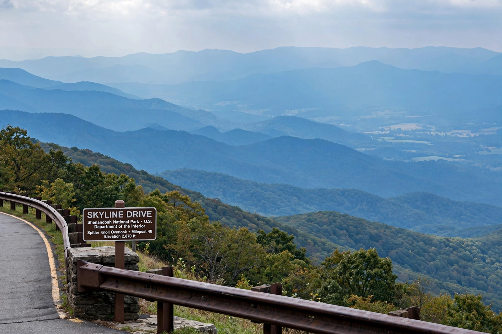

Virginia
From Wikipedia, the free encyclopedia

Virginia, officially the Commonwealth of Virginia, is a state in the Southeastern and Mid-Atlantic United States, between the Atlantic Coast and the Appalachian Mountains, with part of its shore on the Chesapeake Bay. Nicknamed 'Old Dominion' and the 'Mother of Presidents' (eight were born here, including Washington, Jefferson and Madison), it was the site of the first permanent English settlement (Jamestown, 1607), the colonial capital at Williamsburg, the Revolutionary victory at Yorktown (1781) and the Civil War's heaviest fighting — its capital, Richmond, was the Confederacy's. Population about 8.6 million.
Geography and economy
Virginia runs from Atlantic barrier islands and the Tidewater, through the Piedmont, to the Blue Ridge and the Shenandoah Valley. Northern Virginia (Arlington, Fairfax) is the Washington suburbs' engine — federal contracting, data centres ('Data Center Alley' carries a large share of world internet traffic) and tech — while Hampton Roads hosts the world's largest naval base (Norfolk) and Newport News shipbuilding; tobacco and Smithfield hams remain agricultural signatures.
Politics and character
Long a conservative anchor, Virginia turned swing then bluish on Northern Virginia's growth (voting Democratic in presidential elections since 2008), while its history — Pocahontas, slavery's first landing (1619 at Point Comfort), Arlington National Cemetery on Lee's confiscated estate — keeps it the conscience and battleground of American memory.